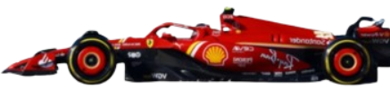
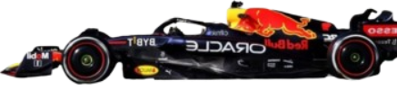
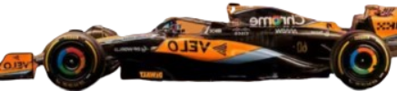
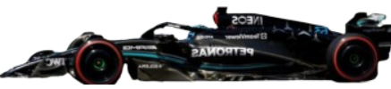
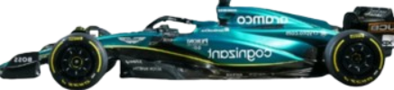
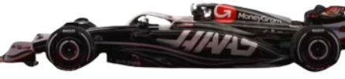
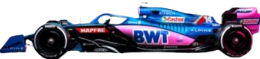
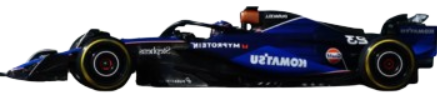
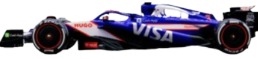
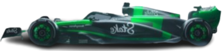

Ferrari
La scuderia Ferrari nasce nel 1929, fondata da Enzo Ferrari. La sede è a Maranello. E' l'unica scuderia che ha partecipato
a tutti i mondiali dal 1950 ad oggi ed è anche la più vincente con 16 titoli costruttori e 15 piloti.
Il primo titolo costruttori lo ottiene nel 1961. Ha ospitato grandi piloti come Michael Schumacher, Niki Lauda, Sebastian Vettel e Alberto Ascari.

Red Bull
La scuderia Red Bull nasce nel 2004, diretta da Christian Horner. La sede è a Milton Keynes, nel Regno Unito.
Nonostante sia una scuderia molto recente ha vinto 6 mondiali costruttori e 7 piloti. I più grandi piloti sono Sebastian Vettel, Max Verstappen e Mark Webber.

McLaren
La McLaren è fondata nel 1963 da Bruce McLaren e la sua sede è a Woking. Ha vinto 8 mondiali costruttori e
12 mondiali piloti. Ha ospitato molti piloti vincenti come Niki Lauda, Alain Prost, Ayrton Senna e Lewis Hamilton.

Mercedes
La mercedes è una scuderia tedesca, fondata nel 1926 con sede a Brackley, in Gran Bretagna. Ha partecipato a due
mondiali nel 1954-1955 vincendo 2 titoli piloti e poi si è ritirata fino al 2009. Ha vinto 8 campionati costruttori e 9 campionati piloti.
Ha ospitato Juan Manuel Fangio, Lewis Hamilton e Nico Rosberg.

Aston Martin
L'Aston Martin ha grandi radici come casa automobilistica ma in F1 debutta nel 1959, e dopo pochi successi si ritira già
l'anno successivo. Ha sede a Silverstone. Dopo essere ritornata con diversi nomi nel 2018, nel 2020 torna la vera e propria Aston Martin. E' Lawrence Stroll a comprare
l'azienda, affiancando a suo figlio Lance prima Vettel E poi Alonso. Non ha mai ottenuto mondiali.

Haas
La Haas è una scuderia statunitense con sede a Banbury. E' stata fondata da Gene Haas. Riesce a debuttare in F1 solo nel 2016.
Non ha mai vinto un mondiale. I piloti che hanno portato più punti sono Kevin Magnussen e Romain Grosjean.

Alpine
L'Alpine è un rebranding del marchio Renault. Nasce con questo nome a partire dal 2021 ma la storia della Renault risale a più
di 40 anni prima. Con questo nuovo nome non ha mai vinto mondiali, ma se si conta anche il periodo precedente ha vinto 2 mondiali costruttori e 2 mondiali piloti.

Williams
La Williams nasce nel 1977, fondata da Frank Williams e Patrick Head con sede a Grove. E' la quarta scuderia più vincente della F1
e ha vinto 9 campionati costruttori e 7 mondiali piloti. I piloti più vincenti sono Nigel Mansell, Alan Jones e Damon Hill.

RB
La Racing Bulls ha sede a Faenza prima con il nome di Toro Rosso e poi Alpha Tauri. Dal 2006 a oggi non ha mai vinto nessun mondiale,
ma ha ospitato piloti quali il giovane Max Versteppen e Daniel Ricciardo.

Sauber
La Sauber è stata fondata nel 1970 da Peter Sauber. Ha partecipato a molte gare ma ne ha vinta solo 1.
Ha cambiato numerose volte nome e dal 2026 collaborerà con Audi. Non ha mai vinto titoli mondiali.
